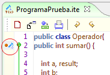
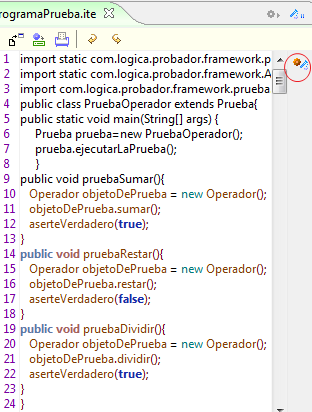
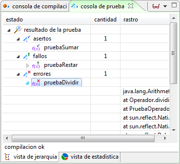

|
Framework Probador |
El Framework de Depuración se integra en el marco de expresión del editor de código y en la consola de Pruebas en el marco de extensión. Las aserciones son establecidas en el marco de expresión mediante marcadores, que señalan las operaciones a probar dentro de la clase.  Figura 1. Asersiones en el marco de expresión El Framework crea una clase especial de pruebas donde se instancian objetos de la clase a probar y se utilizan las operaciones marcadas. Esta clase es personalizable para dar flexibilidad a las pruebas  Figura 2. Pruebas unitarias mdiante instancias de objetos La consola de Pruebas permite visualizar los resultados al final de la ejecución de las pruebas, señalando aquellas que terminaron en acierto, fallo o error.  Figura 3. Consola de pruebas unitarias
|